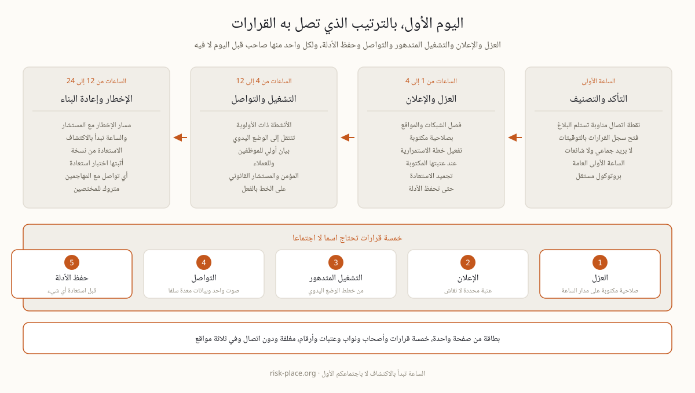

لأي تعطل بروتوكول واحد للساعة الأولى، تتأكدون ثم تصنفون ثم تفعلون فريق إدارة الأزمات وتفتحون سجل القرارات، وقد شرحناه في صفحة الدقائق الستون الأولى من الأزمة ولا نكرره هنا. ما يلي مخصص لما يميز التشفير عن سائر الأعطال، لأن الفدية تنفرد بأربع خصائص تقلب ترتيب العمل. أولاها أن الضرر يتسع ما دامت الشبكة موصولة، فالتأخر هنا ليس انتظارا بل خسارة تضاف كل دقيقة. وثانيتها أن أدوات إدارة الحادث نفسها قد تكون داخل ما جرى تشفيره، من قوائم الاتصال إلى خطة الاستمرارية ذاتها. وثالثتها أن كل إصلاح متسرع يمحو الأدلة التي سيطلبها المؤمن والمستشار القانوني وربما جهة تنظيمية. ورابعتها أن أمامكم خصما يقرأ ما تكتبونه إن كان بريدكم في يده. أما الاكتشاف فنادرا ما يأتي إنذارا نظيفا، بل خادم يتصرف بغرابة أو مجلد مشترك يصبح غير مقروء أو مورد يبلغ عن رسالة غريبة من نطاقكم، ثم تتجمد الأنظمة واحدا بعد آخر ولا أحد متأكد مما بقي يعمل.
هذه القرارات لا تحتمل اجتماعا يشكل عند وقوع الحادث، فكل واحد منها يحتاج اسما وصلاحية مكتوبة ونائبا. اكتبوها اليوم في جدول من خمسة أسطر، وستكتشفون أن الخلاف عليها في وقت السلم يستغرق ساعتين، بينما الخلاف نفسه في يوم الحادث يستغرق نصف يوم ويكلف ما لا يقاس.
| القرار | السؤال الذي يجيب عنه | من يمسك القلم |
|---|---|---|
| العزل | هل نفصل الشبكات والمواقع ونقبل توقفا تشغيليا، ومتى بالضبط | شخص مسمى متاح على مدار الساعة بصلاحية مكتوبة |
| الإعلان | عند أي عتبة نفعل خطة الاستمرارية وهيكل الأزمة | قيادة المناوبة، والعتبة محددة سلفا لا مطروحة للنقاش |
| التشغيل المتدهور | أي الأنشطة يستمر يدويا وأيها يتوقف بأمان | العمليات، انطلاقا من خطط الوضع اليدوي المعدة سلفا |
| التواصل | من يخاطب الموظفين والعملاء والمنظم والمؤمن، وبأي ترتيب | صوت واحد، وبيانات أولية صيغت في وقت السلم |
| حفظ الأدلة | ماذا نصور ونحفظ من سجلات وصور أنظمة قبل استعادة أي شيء | التقنية مع مدون الحادث، فالمؤمن وأي تحقيق يعتمدان عليها |

أكثر ما ينفع في ذلك اليوم ليس مجلدا من مئة صفحة بل ورقة واحدة، لأن الخطة الكاملة قد تكون داخل الشبكة المشفرة، ولأن أحدا لن يقرأ سياسة في الثانية صباحا. البطاقة تكلف ورشة عمل واحدة، وقيمتها يوم الحادث هي الفرق بين حادث وكارثة، وينبغي أن تحمل ما يلي.
تطبع البطاقة وتغلف وتوضع في ثلاثة مواقع لا تعتمد على شبكتكم، ونسخة منها في هاتف كل صاحب دور. والاختبار الوحيد المعتبر لها أن تجربوها في تمرين نظري ثم تعدلوا ما لم يعمل. وبنية الوثيقة الأم التي تنزل منها البطاقة شرحناها في صفحة أقسام خطة استمرارية الأعمال.
في الإمارات يحمل الحادث ساعات قانونية إلى جانب الساعات التشغيلية، وهي لا تنتظر انتهاء عملكم التقني. هناك التزامات تتصل باختراق البيانات الشخصية، وتوقعات إخطار قطاعية تختلف بحسب نشاطكم، ومنها للمؤسسات المالية إخطار العملاء الفوري وفق إطار المصرف المركزي، ثم معايير أدلة سيطبقها مؤمنكم وقد تطبقها السلطات حيث ينطبق الأمر. والنقطة الحاسمة أن الساعة تبدأ عند الاكتشاف لا عند اجتماعكم الأول، ولذلك يوضع مسار قرار الإخطار داخل الخطة وعليه رقم المستشار القانوني، ويقرر مسبقا من يملك صلاحية إطلاقه. أما التزامات الاستمرارية العامة التي تحكم هذا كله فمجموعة في صفحة استمرارية الأعمال في الإمارات، ومتطلبات المعيار الوطني في صفحة NCEMA 7000.
إدارة الحوادث والتمارين وجاهزية التقنية هي الوحدة M4 من برنامج ERGP، أول شهادة في حوكمة المرونة متاحة بالكامل باللغة العربية وبالإنجليزية أيضا. ست وحدات وستة مخرجات عملية وشهادة قابلة للتحقق.
تعرفوا على برنامج ERGP